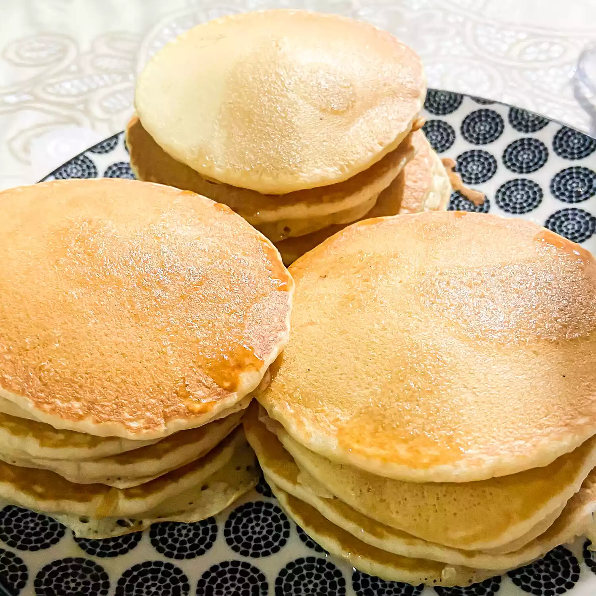

Fluffy Pancakes

Description
Now here's a recipe that is a classic and will never get old. From the recipe page itself,
"Tall and fluffy. These pancakes are just right. Topped with strawberries and whipped cream,
they are impossible to resist." Follow the recipe below to make your own pancakes! Feel free
to add in any extras such as blueberries, bananas, chocolate chips, etc. Thank you for reading!
Ingredients
- 3/4 cup of milk
- 2 tbsp white vinegar
- 1 cup flour
- 2 tbsp white sugar
- 1 tsp baking powder
- 1/2 tsp baking soda
- 1/2 tsp salt
- 1 egg
- 2 tbsp melted butter
Steps
- Combine milk with vinegar in a medium bowl and set aside for 5 minutes to "sour".
- Combine flour, sugar, baking powder, baking soda, and salt in a large mixing bowl.
Whisk egg and butter into "soured" milk. Pour the flour mixture into the wet ingredients
and whisk until lumps are gone.
- Heat a large skillet over medium heat, and lightly coat with oil. Pour 1/4 cupfuls of
batter onto the skillet, and cook until bubbles appear on the surface. Flip with a
spatula, and cook until browned on the other side.
Back to main page